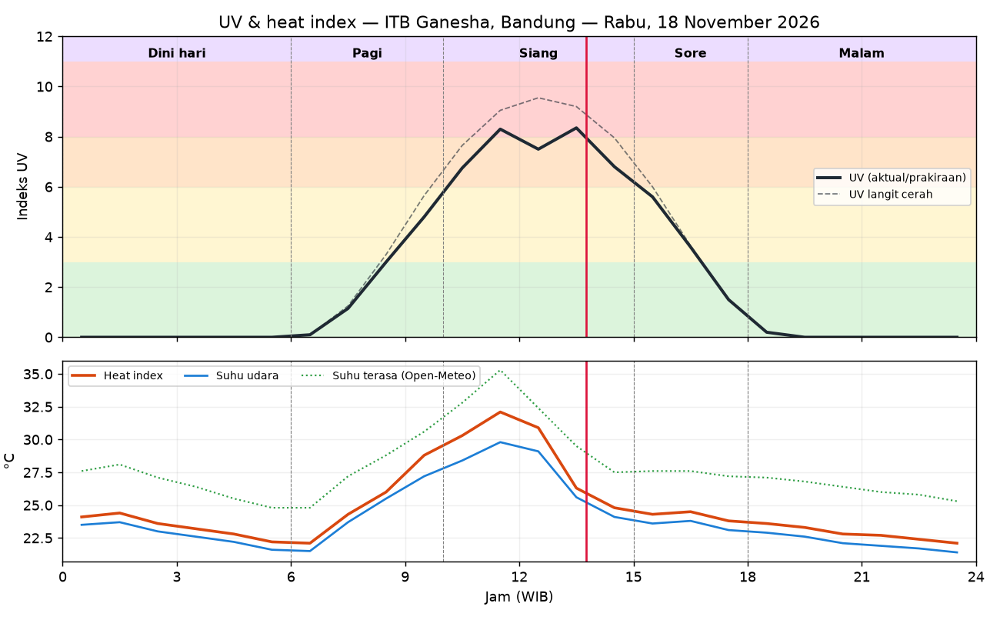
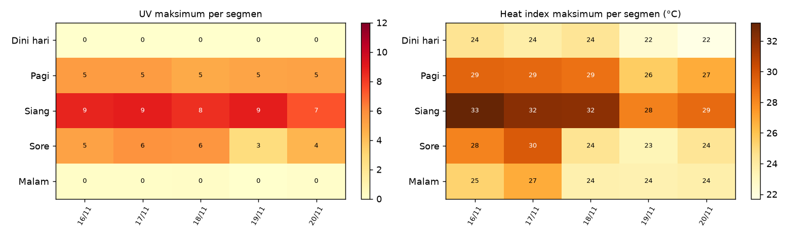

| Segmen (WIB) | Status | UV maks | Heat index maks | Suhu / RH | Kepastian (kisaran) | Yang sebaiknya dilakukan |
|---|---|---|---|---|---|---|
| Dini hari 00:00–06:00 | Sudah lewat | ⚫ 0.0 Tidak ada | 🟢 24.4 °C Nyaman/normal | 23 °C / 88% | Tinggi. HI 23–26 °C | Tidak ada paparan UV berarti; tabir surya tidak diperlukan. |
| Pagi 06:00–10:00 | Sudah lewat | 🟡 4.8 Sedang | 🟡 28.8 °C Waspada (caution) | 24 °C / 78% | Tinggi. UV 4.8–4.8, HI 26–32 °C (2 model) | Oleskan tabir surya SPF 30+ 15–30 menit sebelum keluar. Pakai kacamata hitam; cari teduh saat terik. Suhu terasa hangat: bawa air minum, istirahat di tempat teduh tiap ±1 jam. Meski berawan/mendung, UV tetap menembus awan — tetap pakai perlindungan. |
| Siang 10:00–15:00 | ▶ Sekarang | 🔴 8.3 Sangat tinggi | 🟠 32.1 °C Sangat waspada | 27 °C / 69% | Tinggi. UV 8.3–8.3, HI 29–36 °C (2 model) | Hindari aktivitas luar ruang tanpa perlindungan penuh (SPF 50+, topi, kacamata UV, pakaian menutup). Tunda kegiatan lapangan/olahraga ke segmen lain. Minum 1 gelas (±250 ml) tiap 20–30 menit; kurangi aktivitas berat; istirahat teduh tiap 30 menit. Meski berawan/mendung, UV tetap menembus awan — tetap pakai perlindungan. Ada potensi hujan; bawa payung/jas hujan. |
| Sore 15:00–18:00 | Berikutnya | 🟡 5.6 Sedang | 🟢 24.5 °C Nyaman/normal | 24 °C / 87% | Tinggi. UV 5.6–5.6, HI 23–29 °C (2 model) | ⚠️ Prakiraan tidak pasti; memakai skenario terburuk. Oleskan tabir surya SPF 30+ 15–30 menit sebelum keluar. Pakai kacamata hitam; cari teduh saat terik. Suhu terasa hangat: bawa air minum, istirahat di tempat teduh tiap ±1 jam. Meski berawan/mendung, UV tetap menembus awan — tetap pakai perlindungan. Ada potensi hujan; bawa payung/jas hujan. |
| Malam 18:00–24:00 | Berikutnya | ⚫ 0.2 Tidak ada | 🟢 23.6 °C Nyaman/normal | 22 °C / 95% | Tinggi. HI 22–25 °C | Tidak ada paparan UV berarti; tabir surya tidak diperlukan. Ada potensi hujan; bawa payung/jas hujan. |


Data adalah keluaran model numerik Open-Meteo, bukan pengukuran sensor di ITB. "Kepastian" membandingkan beberapa model cuaca (kisaran UV) dan galat input heat index (suhu ±1 °C, RH ±10%). Bila model tidak sepakat atau kisaran melintasi kategori, tindakan memakai skenario terburuk (⚠️). Detail: METODOLOGI.md di repo.
Diperbarui otomatis 18-11-2026 13:45 WIB · Data: Open-Meteo (CC BY 4.0). Heat index: NWS/NOAA. UV: skala WHO.